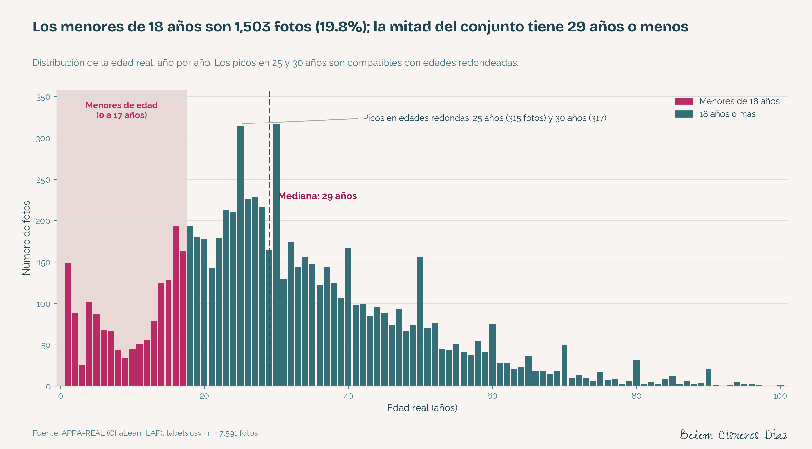
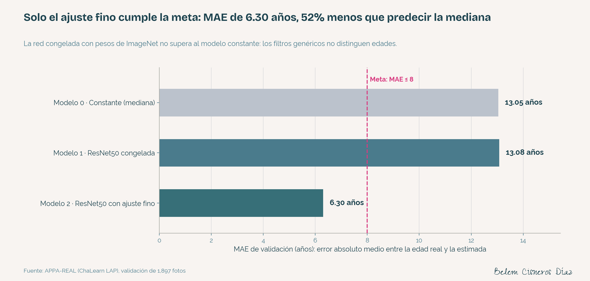
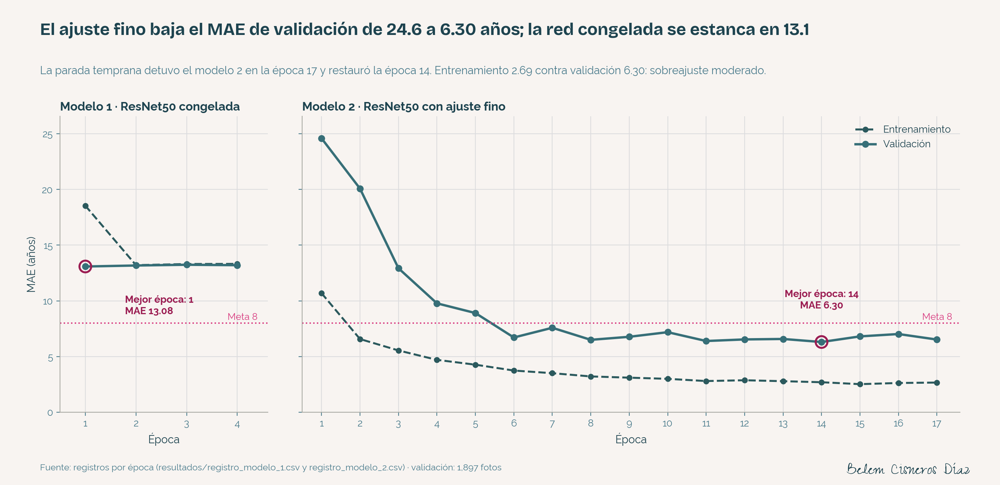
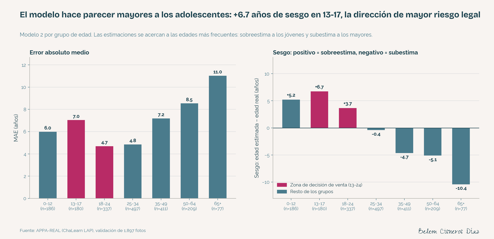
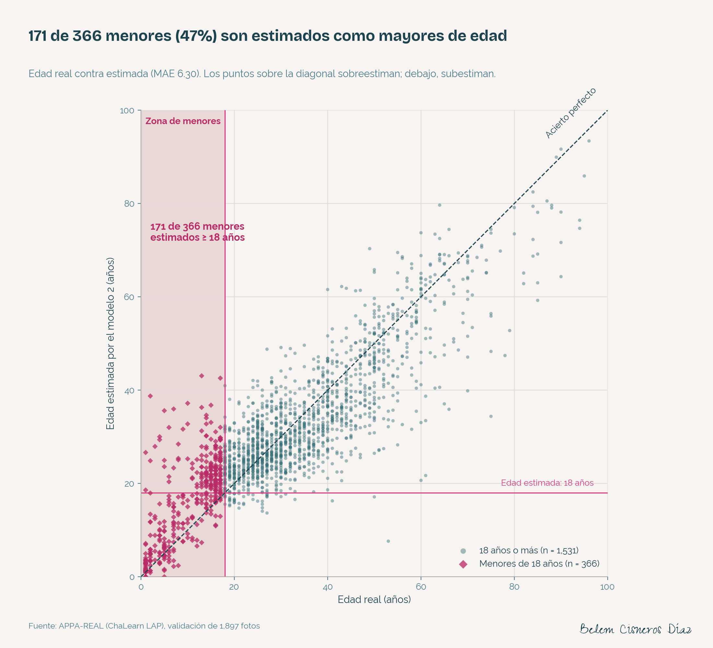
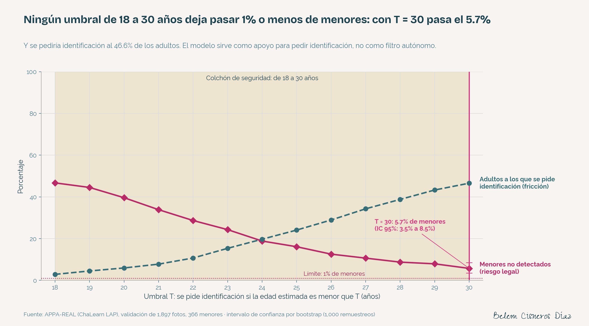

El problema
Good Seed, una cadena de supermercados, debe impedir la venta de alcohol a menores de 18 años. Sus cajas tienen cámaras que se activan en cada compra de alcohol. La pregunta: ¿puede un modelo estimar la edad a partir de esa foto y reforzar el cumplimiento de la ley?
Es una regresión evaluada con el MAE (error absoluto medio, en años). Para el negocio importa algo más que el promedio: el error alrededor de los 18 años y su dirección. Sobreestimar la edad de un menor es riesgo legal; subestimar la de un adulto es fricción en caja.
Los datos
7,591 fotografías del conjunto APPA-REAL con la edad real de cada persona. Los menores son el 19.8% del conjunto y la mitad de las fotos corresponde a personas de 29 años o menos. Ninguna fotografía se publica.

El archivo original no está en orden aleatorio (el primer 25% es 2.1 años más joven), por lo que las filas se mezclan antes de dividir.
El método
Modelo 0 · Constante
Predice siempre la mediana de entrenamiento. Es la línea base.
Modelo 1 · Red congelada
ResNet50 de ImageNet sin modificar y una cabeza entrenable de 2,049 parámetros.
Modelo 2 · Ajuste fino
ResNet50 con sus 23.6 millones de parámetros entrenables, Adam a 0.0001 y parada temprana.
División 75/25 (5,694 / 1,897 fotos), imágenes a 224 × 224, reflejo horizontal en entrenamiento y pérdida MSE. Entrenado en CPU local (Apple M5): unos 7 minutos por época, 17 épocas.
Resultados
| Modelo | MAE de validación | ¿Cumple MAE ≤ 8? |
|---|---|---|
| 0 · Constante | 13.05 | No |
| 1 · ResNet50 congelada | 13.08 | No |
| 2 · ResNet50 con ajuste fino | 6.30 (IC 95%: 6.05 a 6.55) | Sí |


La red congelada no supera al modelo constante: sus estimaciones casi no varían (desviación de 1.06 años). Los filtros de ImageNet necesitan reentrenarse para leer la edad en un rostro.
¿Dónde se equivoca?
El modelo acerca sus estimaciones a las edades más frecuentes: sobreestima a los jóvenes y subestima a los mayores. En la zona de decisión de venta, eso significa que hace parecer mayores a los adolescentes.
| Grupo | Fotos | MAE | Sesgo (estimada − real) |
|---|---|---|---|
| 0-12 | 186 | 5.99 | +5.21 |
| 13-17 | 180 | 7.05 | +6.74 |
| 18-24 | 337 | 4.69 | +3.65 |
| 25-34 | 497 | 4.84 | -0.41 |
| 35-49 | 411 | 7.19 | -4.66 |
| 50-64 | 209 | 8.54 | -5.11 |
| 65+ | 77 | 11.02 | -10.41 |


El umbral: riesgo legal contra fricción
Si la edad estimada es menor que un umbral T, se pide identificación. La regla buscaba el T más bajo, entre 18 y 30 años, que dejara pasar ≤ 1% de los menores. Ningún umbral lo logra.
5.7%
de menores no detectados con T = 30 (21 de 366; IC 95%: 3.5% a 8.5%).
46.6%
de adultos a los que se pediría identificación con ese mismo umbral.
3 años
de colchón exige el regulador alemán KJM, con sistemas comerciales que reportan un MAE de 1.1 años en adolescentes.

Lógica de negocio
113,140 a 339,420 pesos
de sanción adicional por clausura en la CDMX (1,000 a 3,000 Unidades de Cuenta, valor 2025), más multas de 300 a 700 Unidades de Cuenta.
565 clausuras
en la CDMX en 2025, en operativos que atienden denuncias que incluyen la venta de alcohol a menores.
Hasta 40%
de las verificaciones resueltas por la tecnología en la prueba británica; Diebold Nixdorf bajó la verificación de 2 minutos a menos de 10 segundos.
| Escenario por tienda (supuestos) | Uso | Horas liberadas al año | Retorno |
|---|---|---|---|
| A · Prototipo actual | Activa la solicitud de identificación | 0 | Control consistente; una clausura evitada supera los 113,000 pesos |
| B · Precisión comercial | Resuelve hasta 40% de las verificaciones | ~365 | Tiempo de personal y filas más cortas |
Supuestos ilustrativos: 150 ventas de alcohol al día, 1 minuto por verificación, 365 días. Good Seed es un cliente ficticio.
Recomendación
Las cámaras ya existen: la inversión es desarrollo, cómputo e integración. Implementar el escenario A como piloto (la cámara activa la solicitud de identificación y la decisión sigue siendo humana) y, en paralelo, mejorar el modelo con más fotos de 13 a 24 años, modelos preentrenados en rostros y validación con imágenes de las propias cajas. La foto del rostro debe tratarse como dato sensible: consentimiento expreso y por escrito (LFPDPPP, art. 8) y sin almacenar imágenes.
Limitaciones
- Validación con triple función (parada temprana, selección y umbral): métricas posiblemente algo optimistas.
- 366 menores en validación: cada uno vale 0.27 puntos porcentuales de la tasa de no detectados.
- Edad real, no aparente; fotos que no provienen de cámaras de caja.
- Sin detección de vida (liveness) ni análisis por sexo o tono de piel.
- Entrenamiento en CPU y normalización
rescale=1/255en lugar del preprocesamiento original de ResNet50.